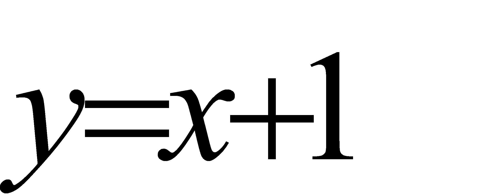
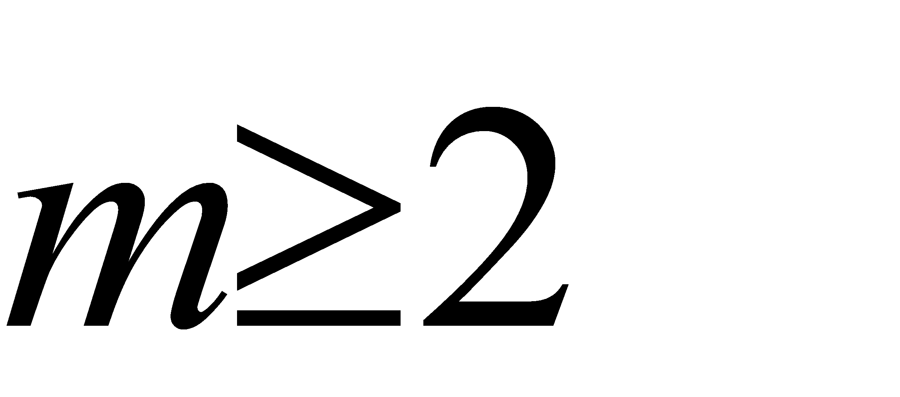
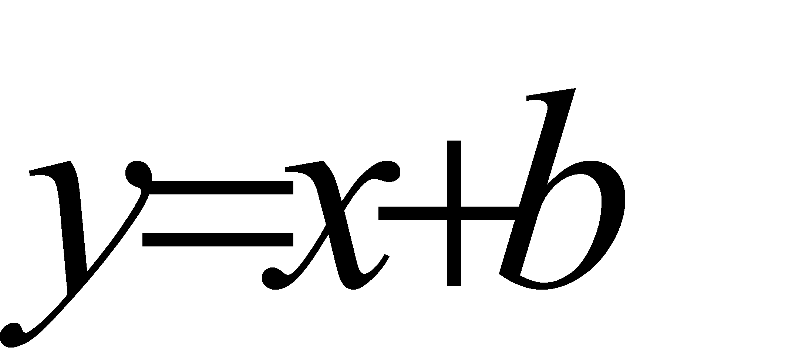
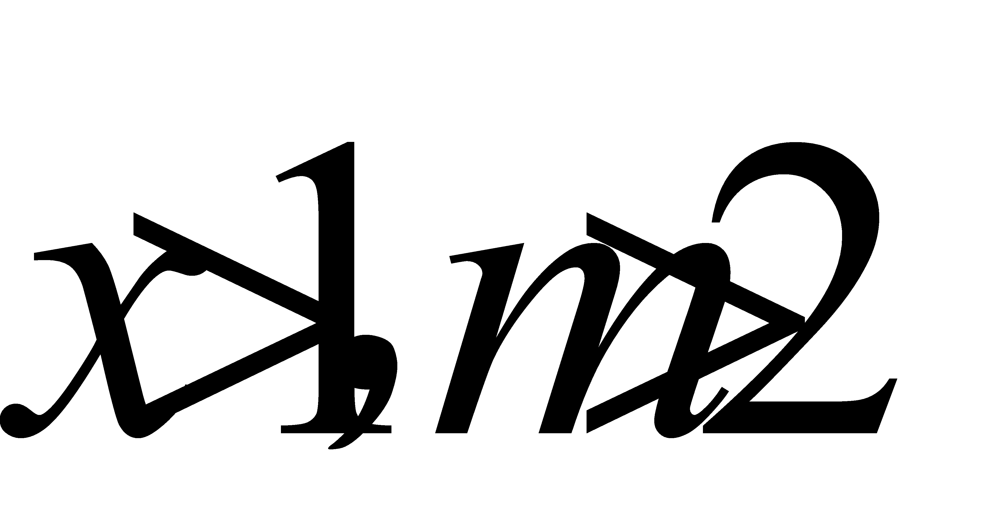
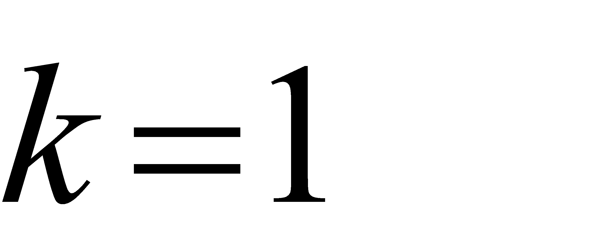
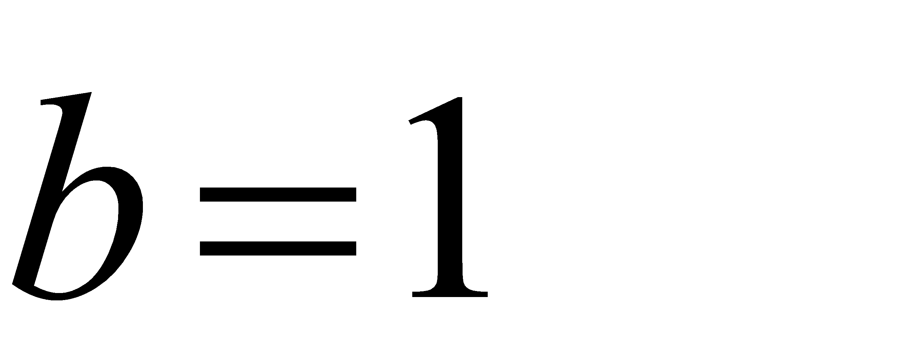
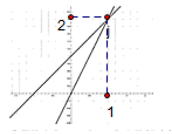
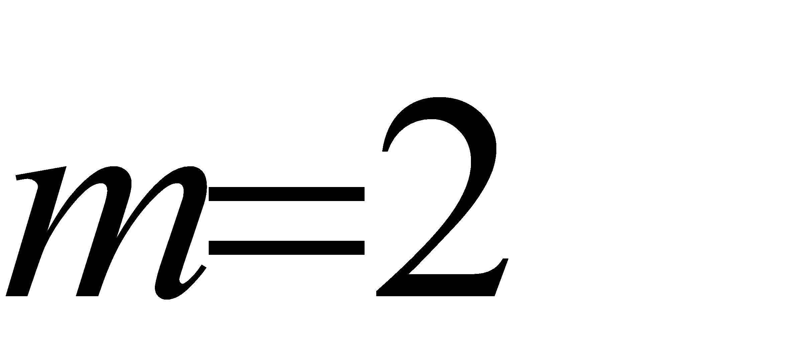

2020年北京市中考数学试题 · 数学解答题 第22题 · 对应解析
22.在平面直角坐标系 中，一次函数
中，一次函数 的图象由函数
的图象由函数 的图象平移得到，且经过点(1，2)．
的图象平移得到，且经过点(1，2)．
（1）求这个一次函数的解析式；
（2）当 时，对于
时，对于 的每一个值，函数
的每一个值，函数 的值大于一次函数
的值大于一次函数 的值，直接写出
的值，直接写出 的取值范围．
的取值范围．
【答案】（1）

；（2）
【解析】
【分析】
（1）根据一次函数由平移得到可得出k值，然后将点（1，2）代入

可得b值即可求出解析式；（2）由题意可得临界值为当 时，两条直线都过点（1，2），即可得出当
时，两条直线都过点（1，2），即可得出当

时，都大于，根据，可得可取值2，可得出m的取值范围．【详解】（1）∵一次函数由平移得到，
∴

，将点（1，2）代入可得

，∴一次函数的解析式为；
（2）当时，函数的函数值都大于，即图象在上方，由下图可知：

临界值为当时，两条直线都过点（1，2），
∴当时，都大于，
又∵，
∴可取值2，即

，∴的取值范围为．
【点睛】本题考查了求一次函数解析式，函数图像的平移，一次函数的图像，找出临界点是解题关键．